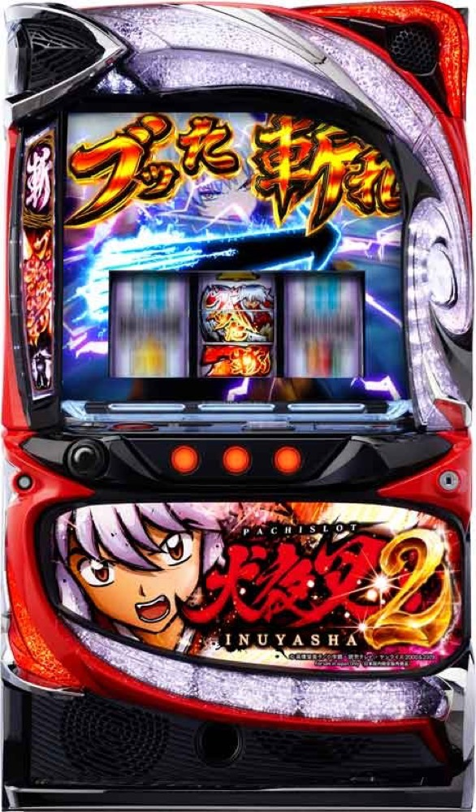

L 犬夜叉2
20G＋αのブッた斬りスラッシュで、当てるたび次回ボーナスが＋1。奈落決戦までを専用進行で体験。
- 導入
- 2024年12月
- メーカー
- エフ
- 分類
- パチスロ
主要スペック
妖勝負・魍魎丸バトルからATへ入り、初期報酬、20G＋αのブッた斬りスラッシュ、青7／白7BIG・ブーストチャンス、5Gの奈落チャレンジ、約82%でループする奈落決戦までを機種専用画面で再現します。
- 下位ATは20G＋α・純増約1.8枚/G
- 当選するたび次回ボーナス個数＋1・最大8個
- 青7約200枚／白7約100枚／ブースト約50枚
- 奈落決戦は約82%ループ
L 犬夜叉2の見どころと計算条件
妖勝負・魍魎丸バトルからATへ入り、初期報酬、20G＋αのブッた斬りスラッシュ、青7／白7BIG・ブーストチャンス、5Gの奈落チャレンジ、約82%でループする奈落決戦までを機種専用画面で再現します。
犬夜叉2を数字で早分かり
初期報酬、ブッた斬りスラッシュ、ボーナス＋1、3種類のBONUS、奈落チャレンジ、奈落決戦を機種専用で記録します。
30秒で分かる犬夜叉2
20G＋αのSTで当てるたび次回ボーナス個数が増える、ボーナス＋1型ATです。
こんな遊び方に向いている
- ボーナス個数が1→2→3と増える緊張感を楽しみたい
- 青7・白7・ブーストの種類をPUSHで開きたい
- 奈落チャレンジから約82%ループの上位を狙いたい
遊ぶ前に確認したいこと
- CZ・AT初当り、主要ゲーム数、純増、ボーナス枚数は公開値
- ゲーム数とボーナス獲得枚数を分けて表示
- 非公表の細かな振り分けは体験用代表値
妖勝負・魍魎丸バトルからATへ
通常時は主に妖勝負を経由してATを目指し、魍魎丸バトル勝利やブッた斬り役では報酬アップZONEへ進みます。CZは設定1約1/248.8〜設定6約1/209.6、ATは約1/435.4〜約1/312.7です。
AT直撃に見える挙動も、内部では規定CZスルー後のAT当選として扱われます。シミュレーターは通常回転後に入口を表示し、最後のPUSHでAT当落を開きます。
初期報酬とボーナス＋1
ATはボーナス1個から始まり、報酬アップZONEを経由した場合は2〜8個から開始。報酬アップZONEは2Gで、成立役に応じて初期個数を決めます。
獲得したボーナスを消化した後は20G＋αのブッた斬りスラッシュへ。同色ベル2連やレア役で当選すると、次回にまとめて受け取るボーナス個数が1個増えます。最大8個です。
3種類のボーナス
青7BIGは約200枚、白7BIGは約100枚、ブーストチャンスは約50枚で、いずれも純増約5.0枚/Gです。下位ATのBIG比率は約55%で、報酬が4個以上ならALL BIG抽選も行われます。
青7・白7BIG中はATゲーム数上乗せを抽選。ブーストチャンスの消化ゲーム数は同一AT内で蓄積され、規定ゲーム数到達が奈落チャレンジの契機になります。
奈落チャレンジと奈落決戦
奈落チャレンジは5G。成功すると上位ATの奈落決戦へ進みます。通常時の一部、AT中のブーストチャンス規定ゲーム数、1000枚到達後の奈落覚醒ZONE、エンディング後など複数の入口があります。
奈落決戦はボーナス上乗せ特化のボーナスゲットZONEと奈落決戦を約82%でループ。専用画面ではボーナス個数をPUSHで開き、ボーナス消化後に継続ジャッジを行います。
固定条件と簡略化する範囲
- 約33.3G/50枚・1,000円46枚貸し・5.2枚交換で固定
- 設定1〜6のCZ・AT初当り・出玉率は公開設定別値を使用
- 初期報酬、20G＋α、ボーナス＋1、3種類のボーナス、奈落チャレンジ、奈落決戦を専用進行
- CZルート比率、下位ATの各小役当選、青7／白7内訳、奈落チャレンジ到達など非公表部分は体験用代表値
- 19,000枚到達時はコンプリート表示
平均Gと投資目安の計算
掲載するブッた斬りスラッシュ初当り約1/435.4は設定1基準です。当サイトでは50枚あたり33.3G、1,000円46枚貸しの固定条件から、設定1基準の平均投資目安を約14,200円と計算します。
シミュレーターでは設定1〜6を均等抽選します。設定1〜6で公開されている初当り値を個別に使います。公開されていない特化ゾーン・上位到達率の設定差は加えません。 換金は5.2枚交換で固定し、結果とランキングに設定を表示します。
シミュレーション結果の見方
当るまで妖勝負・ブッた斬りスラッシュまでのゲーム数
設定設定1・2・3・4・5・6から抽選された今回の設定
上位到達奈落チャレンジと奈落決戦への到達
最終収支差枚と5.2枚交換の収支目安
結果は自動で「マイ記録」に保存され、同じ機種を何回試したか、最高収支、勝率をあとから確認できます。
簡易シミュレーターについて
妖勝負・ブッた斬りスラッシュ・奈落決戦の流れを固定条件で体験できます。JavaScriptを有効にすると、この位置にシミュレーター、演出、マイ記録、機種別ランキングが表示されます。
結果は娯楽・確率理解のための参考表示です。金銭的価値や交換価値はなく、実際の勝敗や収支を保証しません。18歳未満の方の利用はお控えください。
犬夜叉2のよくある質問
犬夜叉2はどんな台？
妖勝負・魍魎丸バトルからATへ入り、初期報酬、20G＋αのブッた斬りスラッシュ、青7／白7BIG・ブーストチャンス、5Gの奈落チャレンジ、約82%でループする奈落決戦までを機種専用画面で再現します。 下位ATは20G＋α・純増約1.8枚/Gが主な確認ポイントです。
犬夜叉2の平均投資目安は？
設定1基準のブッた斬りスラッシュ初当り約1/435.4と、50枚あたり33.3G・46枚貸しの固定条件から、平均14,200円を目安として表示します。実際の設定や遊技状況で結果は変わります。
設定とゲームの流れはどう抽選する？
開始時に設定1・2・3・4・5・6から1つを均等抽選し、妖勝負、ブッた斬りスラッシュ、奈落チャレンジ、奈落決戦の順で到達を判定します。設定は最終結果とランキングに表示します。
収支はどう計算する？
1,000円46枚貸し・5.2枚交換の固定条件で投資、換金、収支目安を計算します。実店舗の再プレイ、持ちメダル、端数処理は含みません。